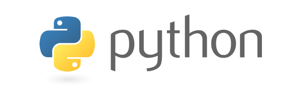

Introduction to Python Programming Language
Ting-Yu Lin
tlin@mozilla.com
October 1, 2014
Overview
Background
- Creator: Guido van Rossum (now employed by Dropbox)
GvR @ OSCON 2006, now age 58

- First appeared in 1991 (0.9.0)
- Who uses Python? Mozilla, Google, Dropbox, MIT 6.00, etc. See List of Python software for more.
- Mercurial. Mozilla Build system and automated testing environment.
Where does the Python name come from?
- It's named after Monty Python's Flying Circus, a British television comedy by BBC from 1969 to 1974, not the snake.

- Python documents prefer to use spam, eggs, and ham instead of traditional foo, bar, and baz.
Python consists of:
- Python core language
- Python implementations
- Python libraries
Python core languages (2 vs 3)
- Python 2
- Python 2.7 will be last major release in 2.x series. Latest 2.7.8.
- PEP 404 Python 2.8 Un-release Schedule
- PEP: Python Enhancement Proposals
- Mozilla is using Python 2.7
- Python 3
- Backward-incompatible, released on December 2008
- Python 3 is a polished Python, which is easier for newcomers. Latest 3.4.1.
- Default string uses Unicode, print as a function, all classes are 'new' style class, etc.
Python language features
- Typing system: dynamic, strong
E.g. '3' + 5 generates
TypeErrorexception - Multi-paradigm programming language
- Object-oriented
- Procedural (imperative)
- Functional
- Reflective
- Python has a garbage collector. Everything is an object.
Python implementations
- CPython: reference implementation. Written in C.
- PyPy: implemented in RPython, translated to C. Interpreter has a Just-in-Time compiler.
- Jython: implemented in Java. Run on JVM.
- IronPython: implemented in C#. Run on .NET.
How to edit Python program?
- Emacs

- Vim
- Sublime Text 2
- IDLE IDE (in standard Python distribution)
- Other editors
Basic usage
The following examples are compatible with Python 2.7
Python shell
- Linux and Mac should have Python installed.
- Windows: Get Python from the official site, or from ActivePython.
- Just type
pythonin the shell$ python Python 2.7.8 (default, Aug 24 2014, 21:26:19) [GCC 4.2.1 Compatible Apple LLVM 5.1 (clang-503.0.40)] on darwin Type "help", "copyright", "credits" or "license" for more information. >>>
- ipython: enhancement to python shell
- pip install ipython
Run Python program
- python hello_world.py
- python -c "print 'Hello, Python!'"
- python -m SimpleHTTPServer
Python as a calculator
>>> a = 2 # <type 'int'> >>> b = 3.0 # <type 'float'> >>> a / b 0.6666666666666666 >>> 2/3 # 0.6666666666666666 in Python 3 0 >>> a**100 # a to the power of 100 1267650600228229401496703205376L >>> help('int') Help on class int in module __builtin__: class int(object) | int(x[, base]) -> integer ...
String
- String is immutable.
>>> c = "abcde" # same as single quote 'abcde' >>> len(c) 5 >>> c[1] # Python use 0-based indexing 'b' >>> c[1:3] 'bc' >>> print 'integer: {}, float: {}'.format(3, 5.12) integer: 3, float: 5.120000 >>> '3' + 5 Traceback (most recent call last): File "<stdin>", line 1, in <module> TypeError: cannot concatenate 'str' and 'int' objects
List
- List is mutable.
>>> d = [a, b, c] >>> d [2, 3.0, 'abcde'] >>> d[0] 2 >>> d[1:] + [['foo', 'bar'], 123] [3.0, 'abcde', ['foo', 'bar'], 123] >>> range(10) [0, 1, 2, 3, 4, 5, 6, 7, 8, 9] >>> "1 2 3 4 5".split() ['1', '2', '3', '4', '5']
Variables
- All variables in Python are references, not values.
>>> x = [0, 1, 2, 3] >>> y = x >>> y[0] = 'ha' >>> x ['ha', 1, 2, 3]
Control structures
- White spaces in Python are significant.
def f(n): ..for x in range(n): ....if x % 2 == 0: ......print x, 'is even.' ....else: ......print x, 'is odd.' ..else: # Run if the for loop is not break ......print 'ok' ..return ('a', 'b', 'c') # Return a tuple
Tuple
- Tuple is immutable.
>>> x = f(4) 0 is even. 1 is odd. 2 is even. 3 is odd. ok >>> x ('a', 'b', 'c') >>> a, b, c = x # Tuple unpacking >>> a 'a'
- Tuple is like list. Why invent two similar types?
Dictionary
- Mapping from key to value. Keys must be immutable.
>>> e = {'Alice': 9372, 'Bob': 138, 'Carol': 7347} >>> for (key, val) in e.items(): ... print key, ' ->', val ... Bob -> 138 Alice -> 9372 Carol -> 7347
List comprehension
>>> x = [] >>> for i in range(10): ... x.append(i**2) >>> x [0, 1, 4, 9, 16, 25, 36, 49, 64, 81] >>> [i**2 for i in range(10)] [0, 1, 4, 9, 16, 25, 36, 49, 64, 81] >>> map(lambda i: i**2, range(10)) [0, 1, 4, 9, 16, 25, 36, 49, 64, 81]
Boolean
Truenot False[1, 2, 3] and TrueFalse or {"Bob": 138}
FalseNone0- Empty containers
[],{},(), etc.
Modules
- If the file name is
module_name.py, useimport module_name>>> import random >>> random.randint(1, 100) # Range from [1, 100] 43 >>> import itertools >>> list(itertools.combinations('abcd', 3)) [('a', 'b', 'c'), ('a', 'b', 'd'), ('a', 'c', 'd'), ('b', 'c', 'd')]
- How to distinguish executable and module?
if __name__ == '__main__': # Do something when this file is executed as a program.
Example: Quick sort
def qsort(lst): """This implements quick sort.""" if lst == []: return [] pivot = lst[0] smaller = qsort([x for x in lst[1:] if x < pivot]) bigger = qsort([x for x in lst[1:] if x >= pivot]) return smaller + [pivot] + bigger
Decorator motivation
- Print the function name when it is called.
def plus3(n): return n+3 def times2(n): return n*2 >>> plus3(4) Calling plus3 7 >>> times2(3) Calling times2 6
Decorator as a solution
- Syntax sugar
@Log def plus3(n): return n+3 def plus3(n): return n+3 plus3 = Log(plus3)
Decorator - Implement Log
def Log(func): def logged_func(*args, **kwargs): print "Calling", func.__name__ return func(*args, **kwargs) return logged_func class Log(object): def __init__(self, func): self.f = func def __call__(self, *args, **kwargs): print 'Calling', self.f.__name__ return self.f(*args, **kwargs)
Python Libraries
- batteries included:
os,re,sqlite3,json, etc. - matplotlib, pycario
- Most of the third party libraries support Python 3
What happened if typing import this in the Python interpreter?
- import this
>>> import this The Zen of Python, by Tim Peters Beautiful is better than ugly. Explicit is better than implicit. Simple is better than complex. Complex is better than complicated. Flat is better than nested. Sparse is better than dense. Readability counts. ... [skip 12 lines]
- PEP 20 – The Zen of Python
How to debug Python programs?
- pdb
python -m pdb some_prog.py- Insert
import pdb; pdb.set_trace()
- ipdb
- pip install ipdb
- Insert
import ipdb; ipdb.set_trace()
- Debugging Python Like a Boss
Dynamic features

Duck typing
- Duck typing allows polymorphism without inheritance!
class Duck: def speak(self): print 'Quack!' class Cat: def speak(self): print 'Meow!' def happy(x): x.speak() >>> d = Duck() >>> c = Cat() >>> happy(d) Quack! >>> happy(c) Meow!
- Usually inherit for implementation, not for interface.
- Provided you can perform the job, we don't care who your parents are.
Reflection
- The program can observe and modify its own structure and behavior at runtime.
class C(object): def f(self): print 'f()' >>> c = C() >>> dir(c) ['__class__', '__delattr__', '__dict__', '__doc__', ..., 'f'] >>> c.val = 123 >>> dir(c) ['__class__', '__delattr__', '__dict__', '__doc__', ..., 'f', 'val'] >>> c.g() Traceback (most recent call last): File "<stdin>", line 1, in <module> AttributeError: 'C' object has no attribute 'g' >>> def g(): print 'g()' >>> c.g = g >>> c.g() g()
Thank you. Any questions?

References
- The official Python Documents: tutorial, library reference, language reference, etc.